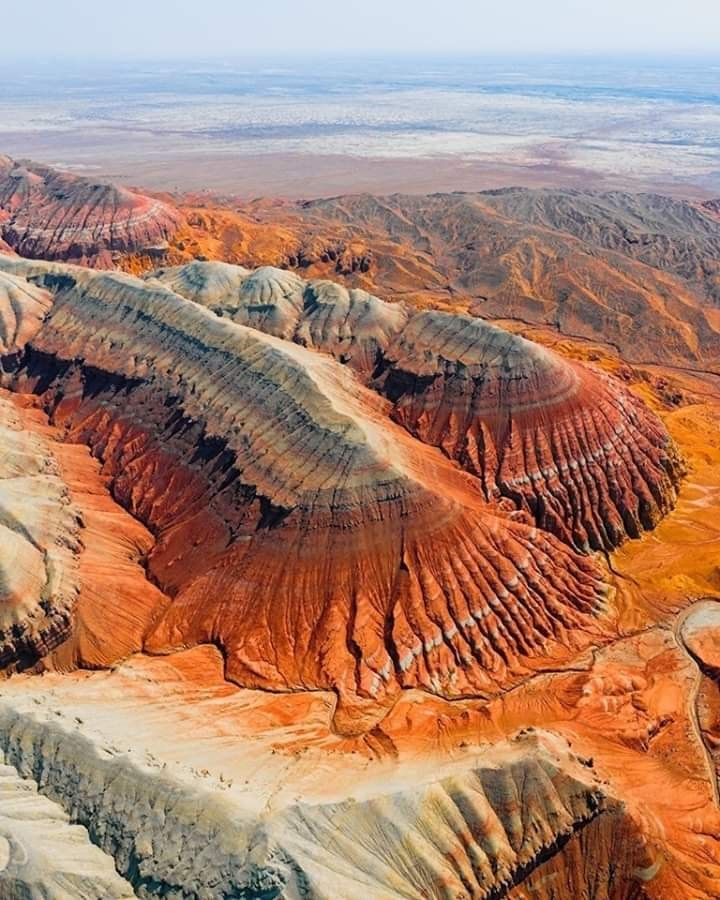
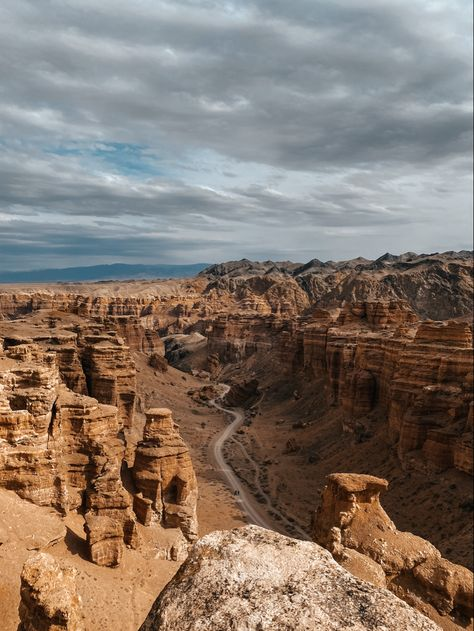
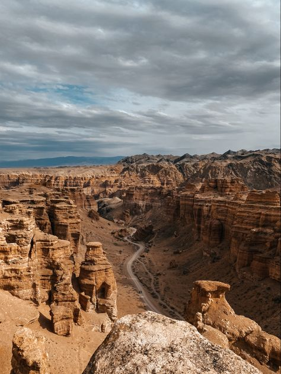

Charyn Canyon – One of Kazakhstan's Most Impressive Natural Wonders
Charyn Canyon is one of the most impressive natural wonders in Kazakhstan. Often compared to the Grand Canyon in the USA, it has its own unique landscape and rich history. The canyon was formed about 12 million years ago due to the influence of wind and water, creating breathtaking rock formations.
- Length: 154 km
- Depth: up to 300 m
- Width: 20–80 m
- Age of rocks: up to 12 million years
What to See?
- 🏜 Valley of Castles – rocks shaped like ancient fortresses 🏰
- 🌿 Ash Grove – a rare relict forest within the canyon 🌳
- 🌊 Charyn River – a scenic spot to relax by the water 🚣♂
What to Do?
- 🥾 Hiking – trails among the rock formations 🚶♂
- 🏕 Camping – overnight under the starry sky ⛺
- 🚗 Jeep tour – extreme adventure through the canyon 🚙
How to Get There?
📍 Location: Almaty Region, 200 km from Almaty
🚗 By car: 3–4 hours via the Almaty–Kegen highway
🚌 Tours: available from Almaty
Prices
💰 Park entry: 1,000 KZT per person
💰 Transfer from Almaty: from 6,000 KZT
Charyn Canyon is a perfect destination for nature lovers, adventure seekers, and fans of unique landscapes! 🏜🔥
PHOTOS

 
